Course: Design and Construct
Semester: Summer 2026
Location: Roi Et, Thailand
Duration: 4 weeks
Budget: 120.000 Baht/3000 Euros
Sponsor: Chulalongkorn University INternational Program in Design + Architecture
Designers: Students + Roi Et Community
Supervisors: archigrad.io
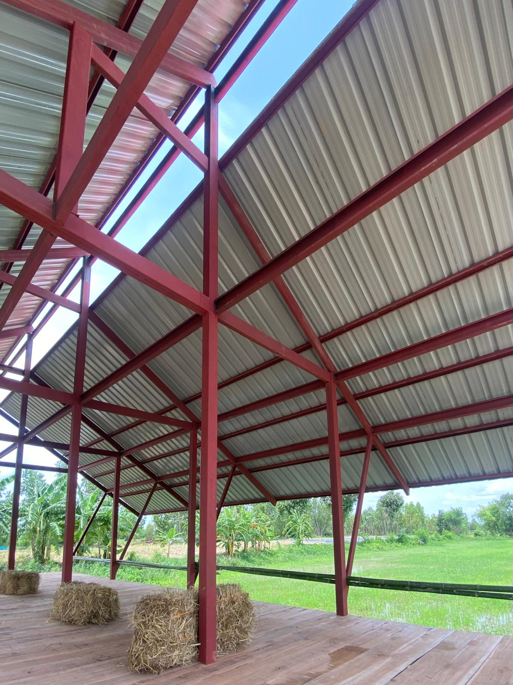
DCC project takes place at 101 Hug Market, a community-based learning hub and marketplace in Roi Et Province, Thailand. The initiative responds to local research on how small-scale farming communities can achieve sustainable livelihoods through ecological practices. The site serves 40 families under the Dhammasanti Foundation and 101 Hug Market is the project that operates through a formal partnership (MOU) with Roi Et Rajabhat University to co-develop the site for pro-poor activities.
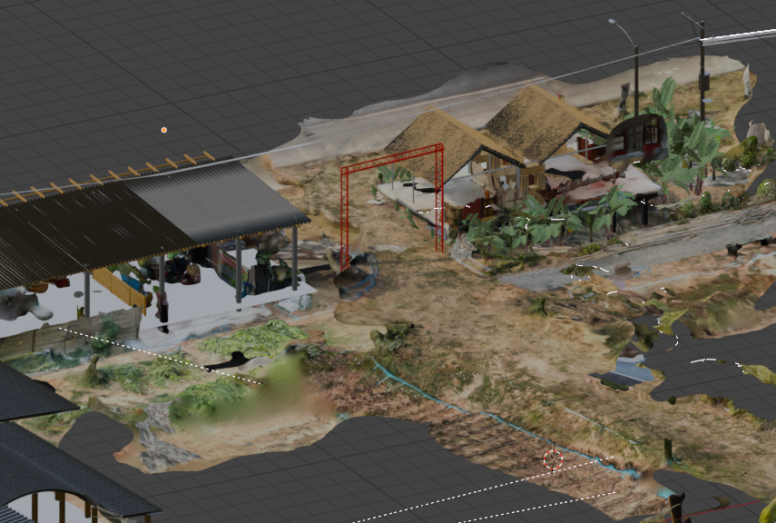
The immediate priority is the development of market hall structures. These structures serve as the financial engine for the foundation, providing the necessary infrastructure to generate income. Students will focus on the co-design and on-site construction of a durable, climate-resilient marketplace. This structure is conceived as a repeatable module—a procedural design logic that allows for variation and adaptation, ensuring the community can replicate the system if the market/needs grow.
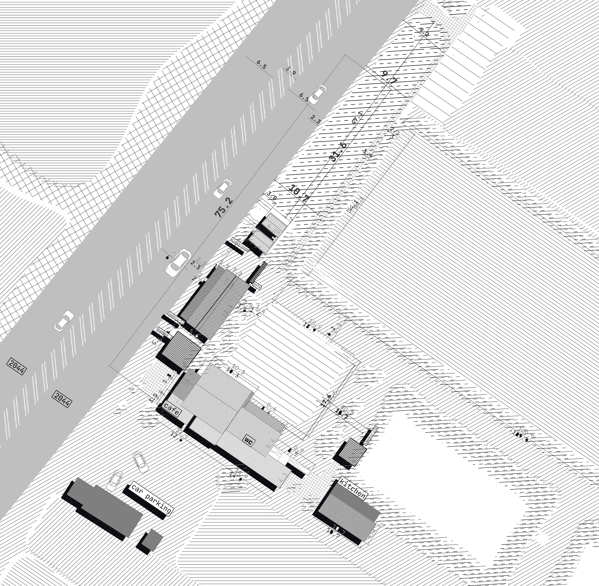
This is a hands-on project prioritizing functionality. You will work directly with local people and materials. Consequently, design proposals will be guided by technical realities, specifically the strict limitations on budget, available local resources, and the site conditions.
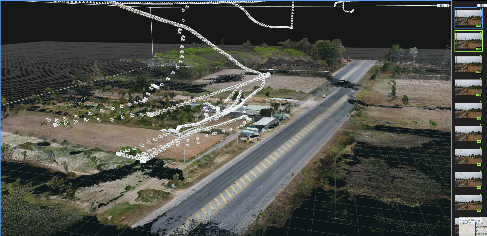
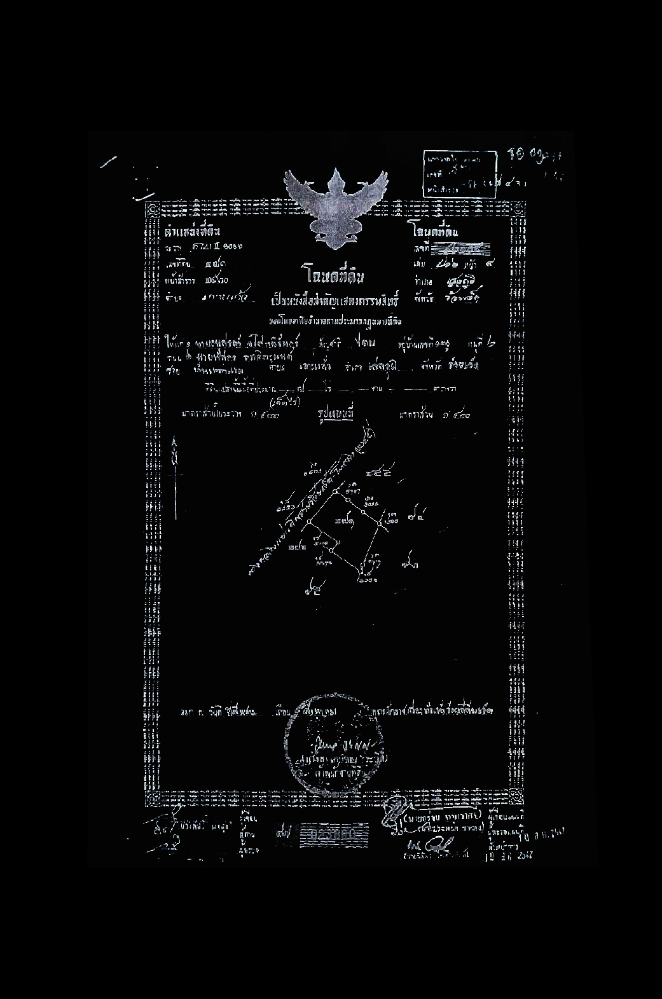
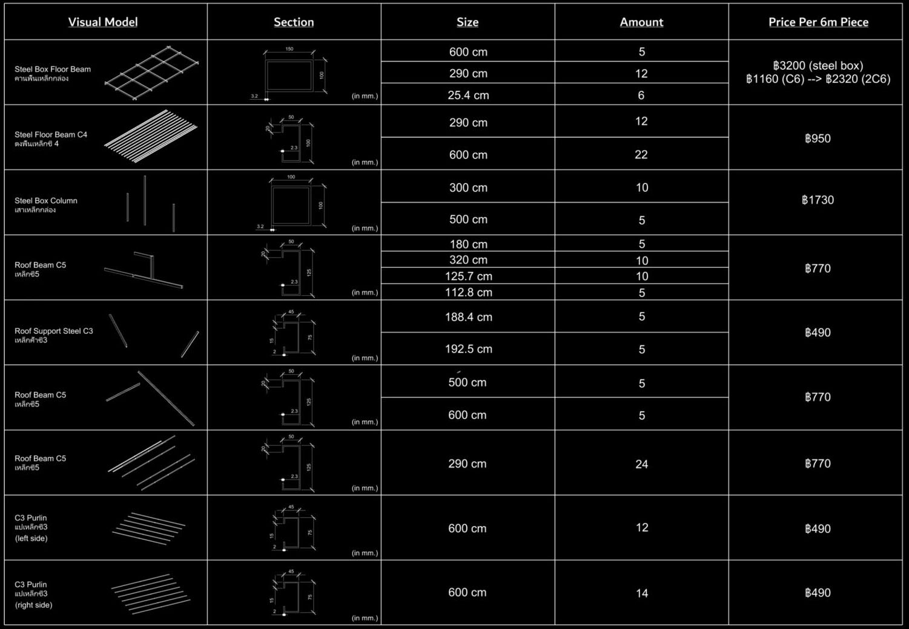
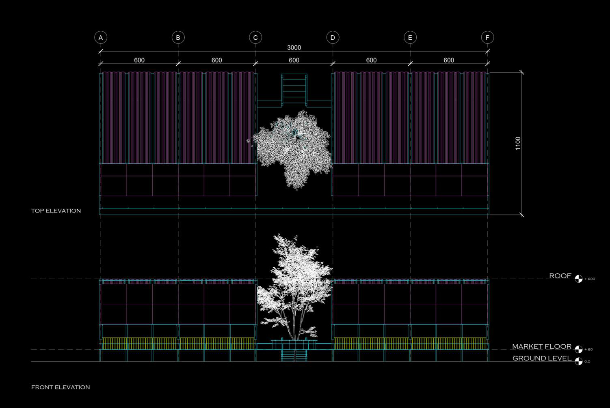
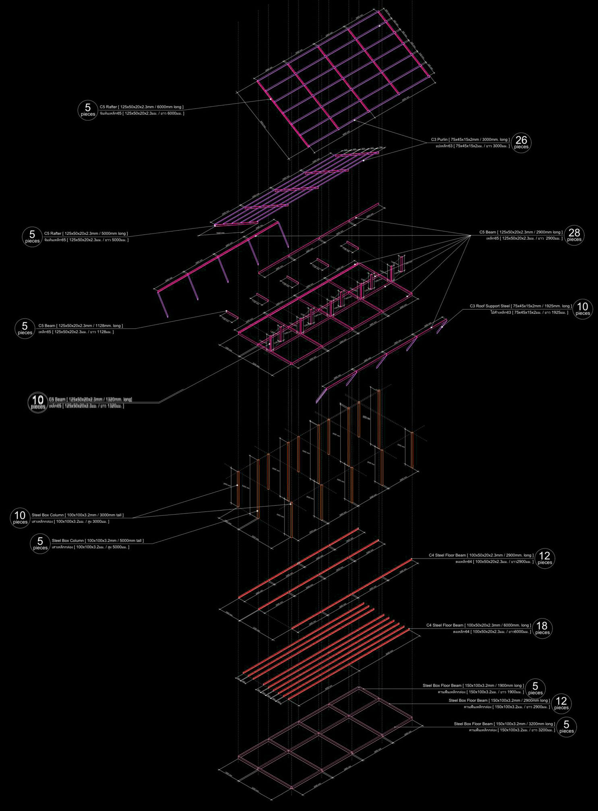
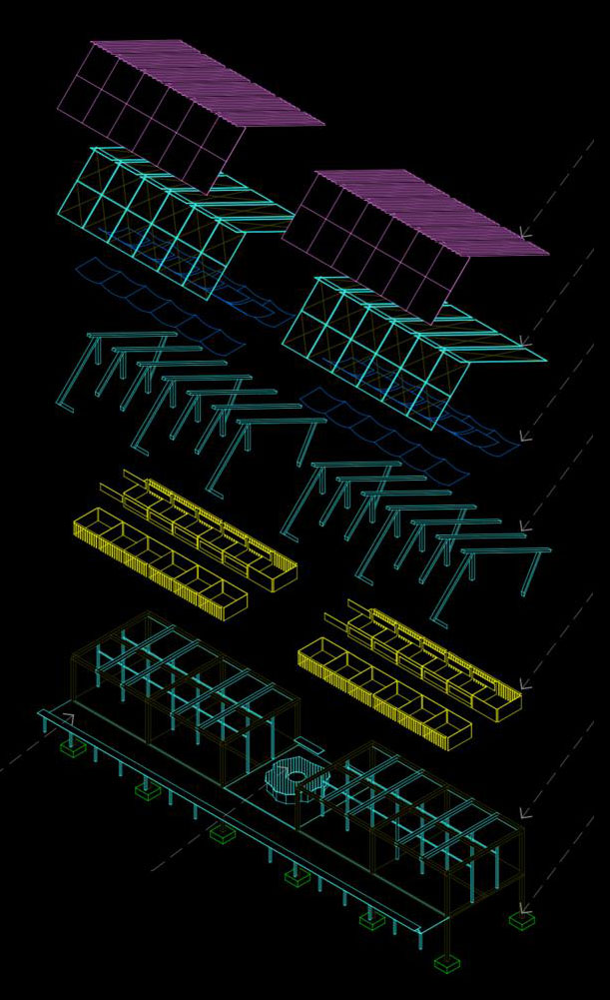
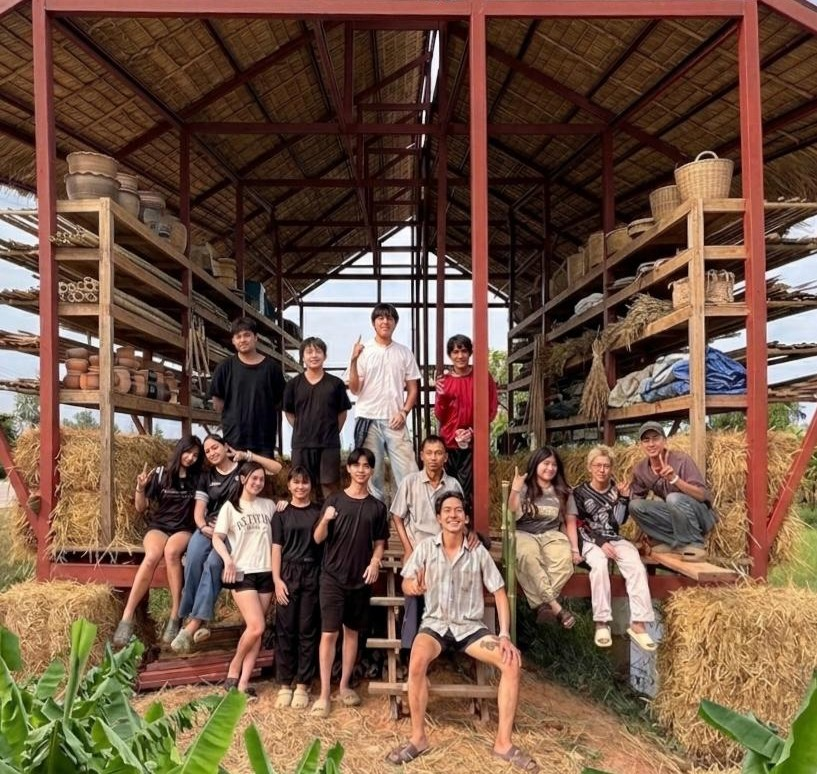
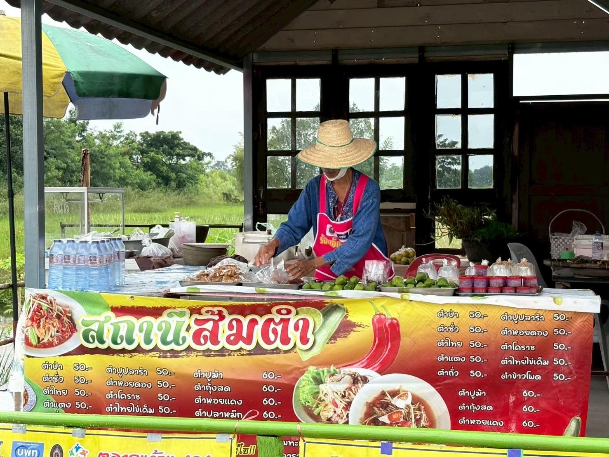
.jpeg)
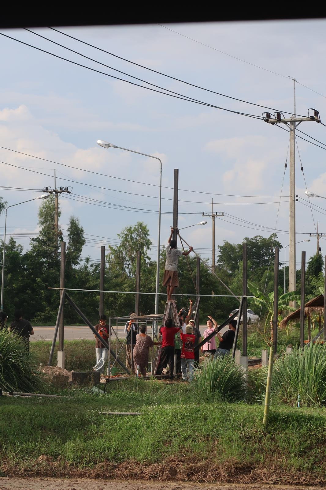
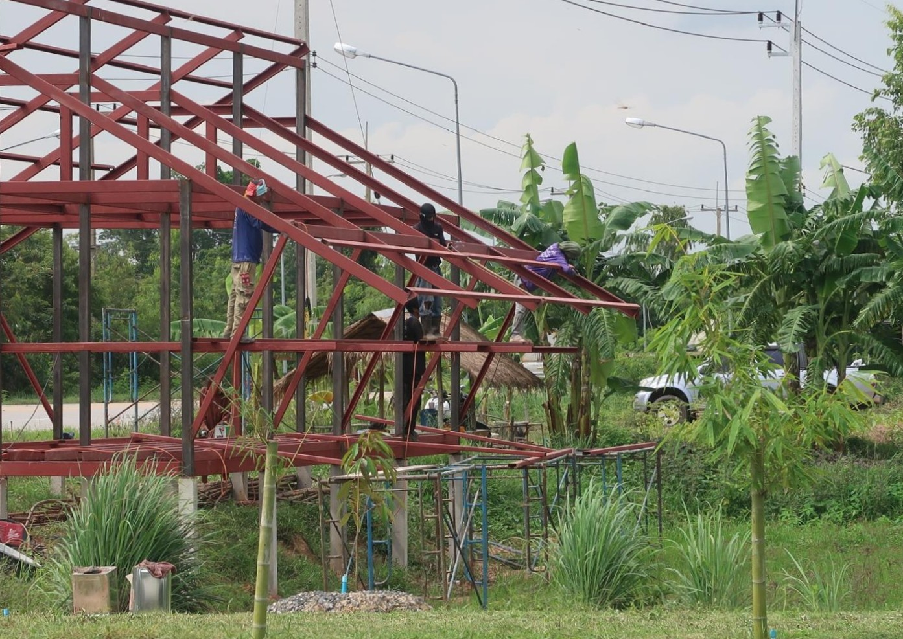
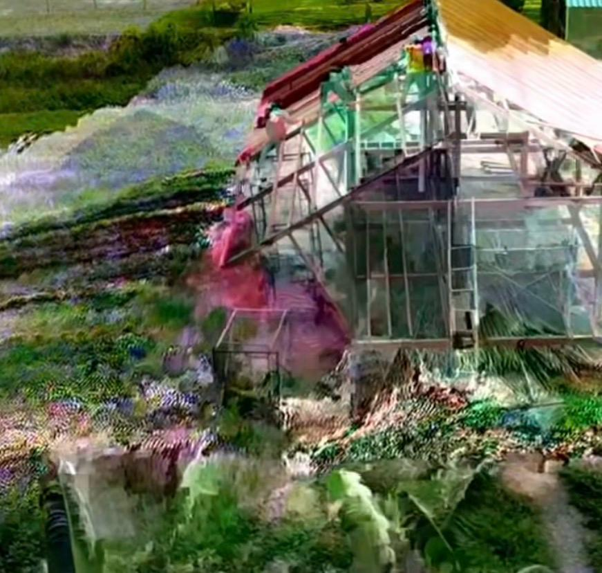
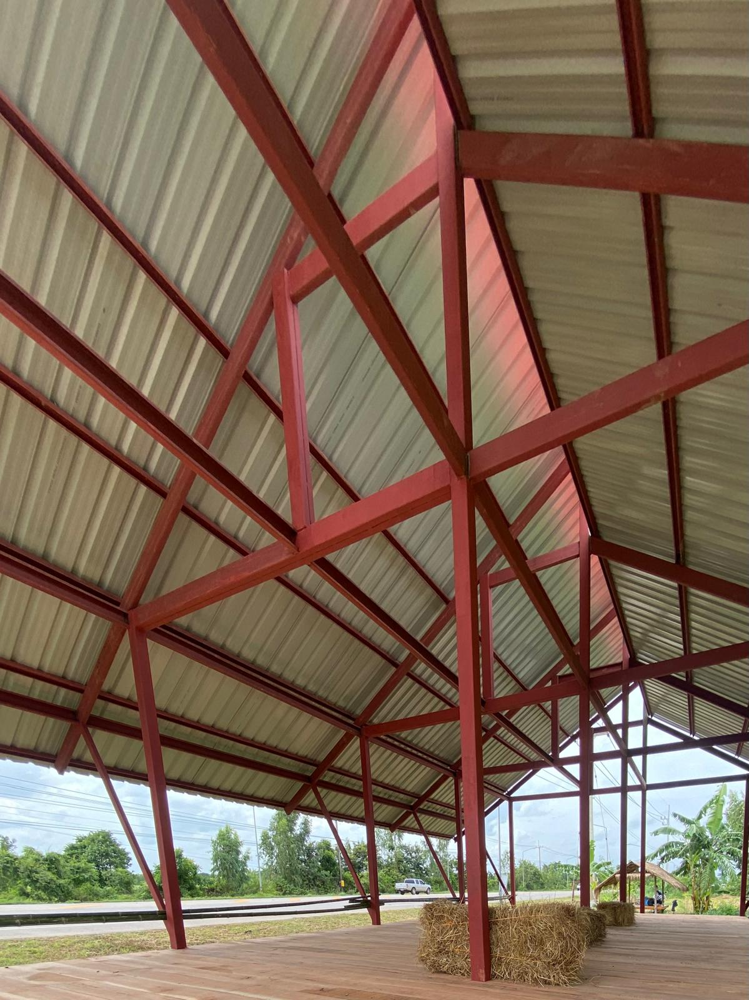